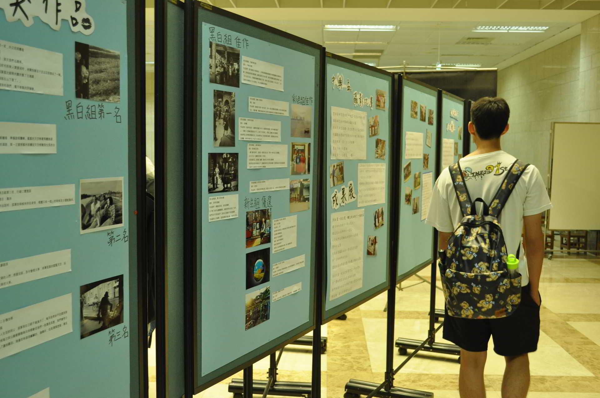
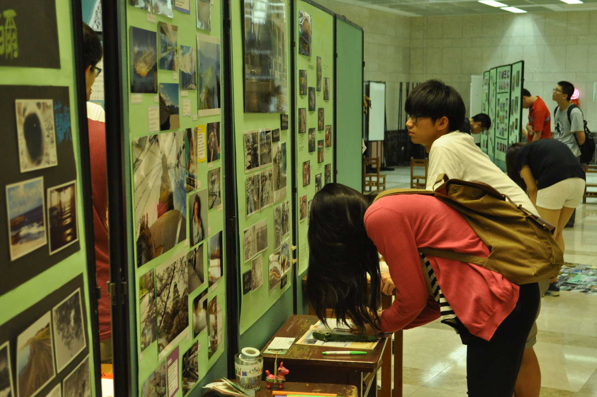

期末成果展記錄照
面臨
學期末，讀書的壓力壓得你喘不過氣嗎？在閒暇之餘，不妨來看看攝影社所舉辦的成果展吧！在為期一週的展期內，將展出整學年度我們攝影社所經歷過大大小小的活動，從上學期的迎新、攝影研習營，到下學期的暗房研習營，以及各式各樣的外拍，並展現出在這一年當中，我們透過了攝影社所學習到的、體驗到的各種經歷，將所有的感受，轉化成一張張的相片！



期末成果展

104/06/01 (一) ~ 104/06/07 (日) 10:00 ~ 19:00

中興大學圖書館 1F 大廳